大家好，这节课咱们来学核桃的赛考体系，也就是图形化阶段孩子会接触到的考级和比赛。开始之前先考考大家，还记不记得之前讲过，咱们在哪个阶段组织孩子报名赛事？
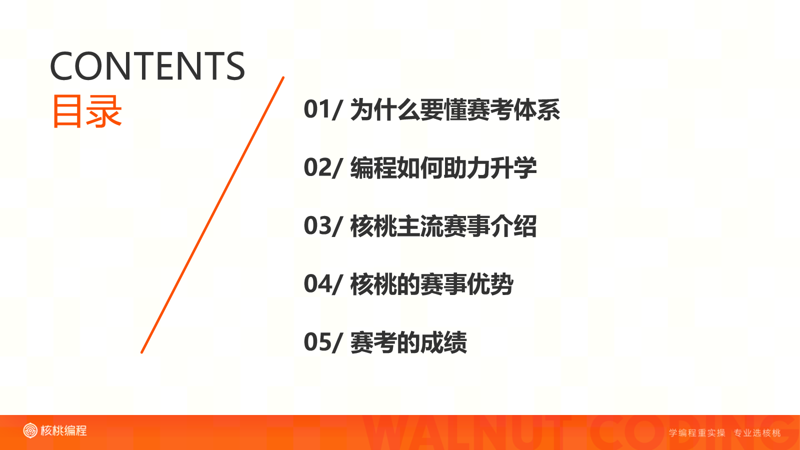
答案是L7-4/L8-2。今天这节课分五个部分。第一，为什么要懂赛考体系；第二，编程如何助力升学；第三，核桃主流赛事介绍；第四，核桃的赛事优势；第五，核桃赛考的成绩。这五部分听完，家长再问到赛事和升学的问题，大家心里就有底了。
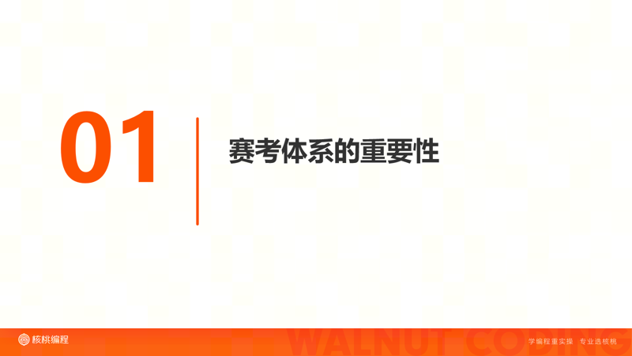
我们首先进入第一部分：赛考体系的重要性。这一部分之所以放在开篇讲解，是因为赛考规划是家长关注度非常高的内容。孩子完成第一阶段学习之后，家长通常会自然产生疑问：后续可以参加哪些赛事、学习路径如何延伸，这些赛考对孩子的成长与发展有什么价值。如果一线老师和课导自身对赛考体系不够清晰，无法给出有依据的规划说明，家长就很难信任我们提供的长期学习方案。本部分我们重点讲解两大核心内容：第一，赛考本身的业务价值与意义；第二，课导老师在赛考服务与规划过程中的核心角色定位。
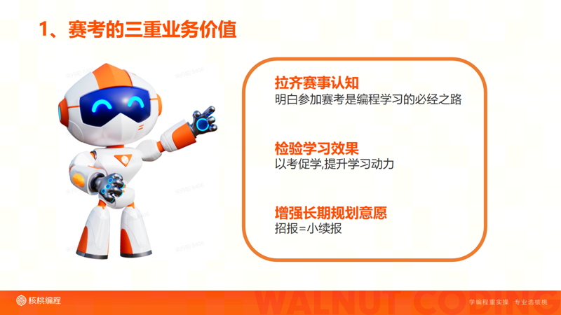
我们一起来学习赛考的三重业务价值。第一重价值，拉齐赛事认知。家长对于赛考的认知通常存在两极分化：一部分家长认为学习编程的核心是锻炼思维，参不参赛、考不考试无关紧要；还有一部分家长期望值过高，认为拿到证书就能直接助力升学。这两种认知都存在偏差。因此我们和家长沟通赛考，首要目标并不是推销赛事，而是统一认知，引导家长理解，赛考是编程学习路径里自然且重要的一环。第二重价值，检验学习效果，也就是以考促学。借助赛事和标准化测评，能够直观呈现孩子阶段性的学习收获，同时帮助孩子建立成就感，持续提升学习动力。第三重价值，增强家长长期规划的意愿。这里大家记住一句关键结论：赛事报名，等同于一次小型续报。家长愿意为赛事报名，孩子完成参赛并拿到成果，家长亲眼看见学习效果，会更愿意继续报名下一阶段课程以及后续赛事。所以赛事报名不是一锤子买卖，而是我们长期维护家长信任、深耕学员关系的重要入口。来看一道题，“明白参加赛考是编程学习的必经之路”对应赛考的哪一重业务价值？
互动题
“明白参加赛考是编程学习的必经之路”对应赛考的哪一重业务价值？
- A. 检验学习效果
- B. 增强长期规划意愿
- C. 拉齐赛事认知
- D. 规划专家
选错后：直接继续
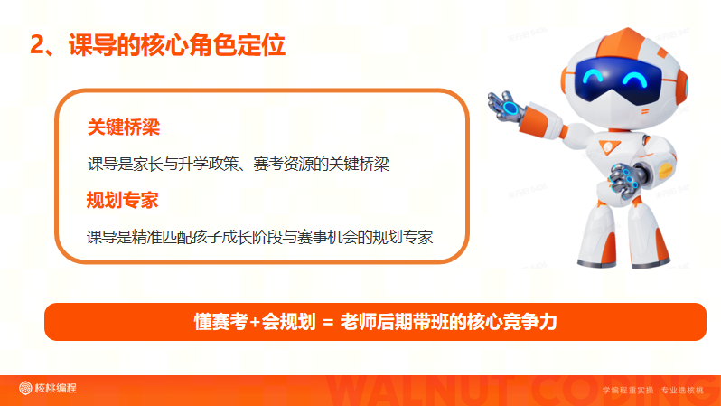
接下来我们看课导老师在赛考体系中的核心角色定位，页面上提炼了两个关键词。第一个关键词，是关键桥梁。真正系统了解升学政策、熟悉正规赛考资源的家长并不多，课导的核心作用之一，就是在家长与升学政策、赛事资源之间搭建桥梁，把准确、专业的信息清晰传递给家长。第二个关键词，是规划专家。课导需要结合孩子的成长阶段、当前学习情况和后续目标，精准匹配合适的赛事与学习路径，为家长和孩子提供科学、清晰的规划建议。大家记住这句话：懂赛考，加会规划，就是我们后期带班服务的核心竞争力。
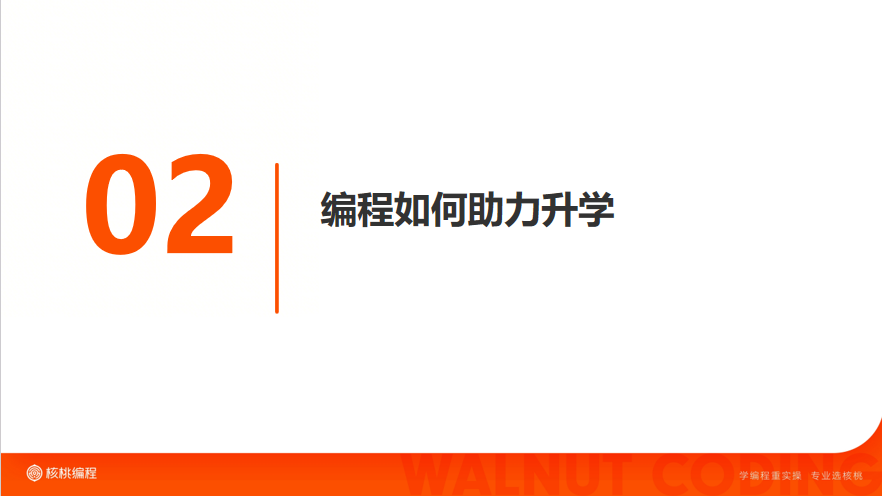
接下来我们进入第二部分内容：编程如何助力升学。正式开始之前，我们先来做一个小调研。大家可以想一想，对于编程助力升学这条赛道，你之前的了解程度是什么样的？是完全不了解、隐约知道一些，还是已经掌握得非常清晰？大家按照自己真实的情况选择就可以。
互动题（调查，无对错）
关于编程助力升学，你了解多少呢？
- A. 完全不了解
- B. 隐约知道一点
- C. 非常清晰
选错后：直接继续
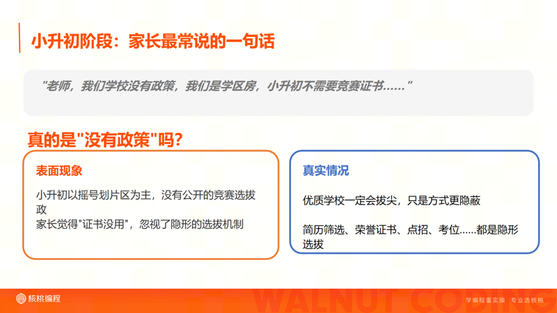
接班之后，我们接触小升初的家长，经常会听到这句话：“老师，我们学校没有政策，我们是学区房，小升初不需要竞赛证书。”那小升初真的是没有政策吗？我们先看表面现象：小升初主流是摇号、划片区入学，没有公开的竞赛选拔政策，很多家长就会直接认为证书没有用处，忽略了背后隐形的选拔机制。但真实情况是，优质学校依然会筛选优秀生源，只是选拔的方式更加隐蔽。简历筛选、荣誉证书、点招、考位机会，这些都属于隐形选拔。所以大家要理清核心逻辑：没有明文公开的选拔政策，不代表没有选拔；没有竞赛直接录取的政策，也不代表证书没有价值。含金量高的科创证书，是孩子综合素质简历里很重要的加分素材。
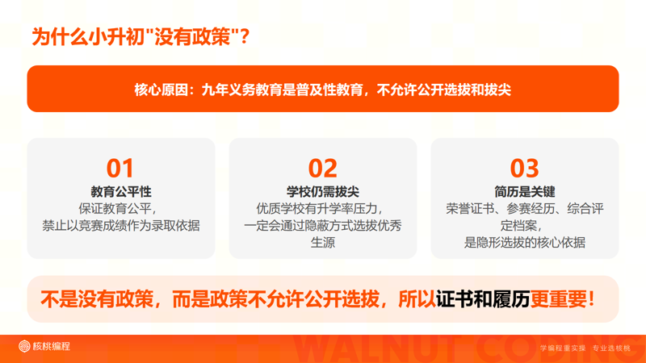
很多家长都会疑惑，小升初为什么没有公开的竞赛升学政策？核心原因在于，九年义务教育属于普及性教育，政策层面不允许公开选拔、公开拔尖，我们可以拆成三点来理解。第一，保障教育公平。为了维护义务教育阶段的公平原则，国家明确禁止把竞赛成绩作为入学录取的依据。第二，优质学校存在生源筛选需求。优质学校背负着教学与升学的考核目标，本身有筛选优质生源的需求，既然不能公开选拔，就会采用更隐蔽的方式开展筛选。第三，综合素质简历是核心载体。荣誉证书、赛事经历、综合评价材料，就是这类隐形选拔里重要的参考依据。所以最终的结论是：并不是完全没有相关的参考方向，而是政策不允许公开选拔。在这样的规则之下，高质量的赛事证书与完整的成长履历，反而更具备价值。
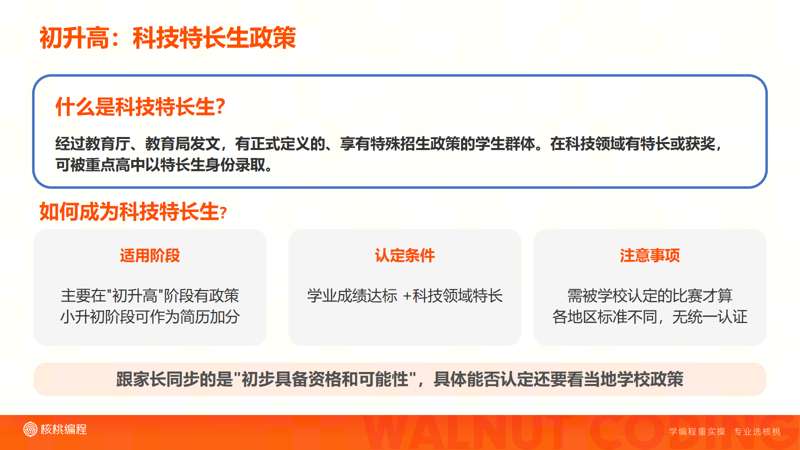
小升初之后是初升高，这里有一个重要政策，叫科技特长生。什么是科技特长生？它是经过教育厅、教育局发文，有正式定义的、享有特殊招生政策的学生群体，在科技领域有特长或获奖，可以被重点高中以特长生身份录取。怎么成为科技特长生？看三点。适用阶段，主要是在初升高阶段有政策，小升初阶段可以作为简历加分。认定条件，是学业成绩达标，再加上科技领域的特长。注意事项，需要被学校认定的比赛才算，而且各地标准不同，没有统一认证。所以跟家长沟通时，咱们同步的是孩子初步具备资格和可能性，具体能不能认定，还要看当地学校的政策。
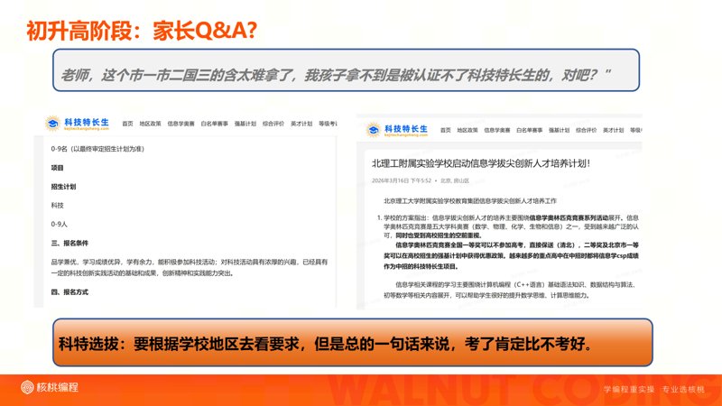
来看一个带班中常被问到的问题。家长会说：老师，市一省二国三的含金量太难拿了，我孩子拿不到奖，是不是就认证不了科技特长生？其实不是。大家看这两张截图。左边这所学校的科技招生计划，报名条件写的是品学兼优、学有余力，积极参加科技活动，对科技活动有浓厚兴趣，有一定的科技创新实践基础，并没有硬性要求拿大奖。右边是北理工附属实验学校的信息学拔尖创新人才培养计划，对信息学奥赛获奖的要求就高得多。同样是科技特长生，不同学校的要求差别很大，有的看奖项，有的看能力和参赛经历。所以具体给孩子选什么赛事，要看孩子所在地区的政策和目标学校。但总的一句话，考了肯定比不考好，有证书比没证书好，证书含金量也是越高越好。
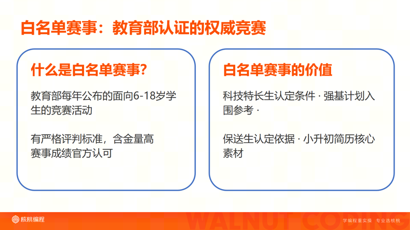
说完科技特长生，再往上看一层，白名单赛事。什么是白名单赛事？它是教育部每年公布的、面向6到18岁学生的竞赛活动，有严格的评判标准，含金量高，赛事成绩官方认可。它的价值体现在四个方面：科技特长生认定条件、强基计划入围参考、保送生认定依据，还有小升初简历的核心素材。也就是说，白名单赛事是贯穿孩子升学全程的硬通货。这里请留意年龄范围是6到18岁。来看一道题，白名单赛事是教育部每年公布的、面向多大年龄学生的竞赛活动？
互动题
白名单赛事是教育部每年公布的、面向多大年龄学生的竞赛活动？
- A. 5-18岁
- B. 6-15岁
- C. 8-18岁
- D. 6-18岁
选错后：重讲本页重触发
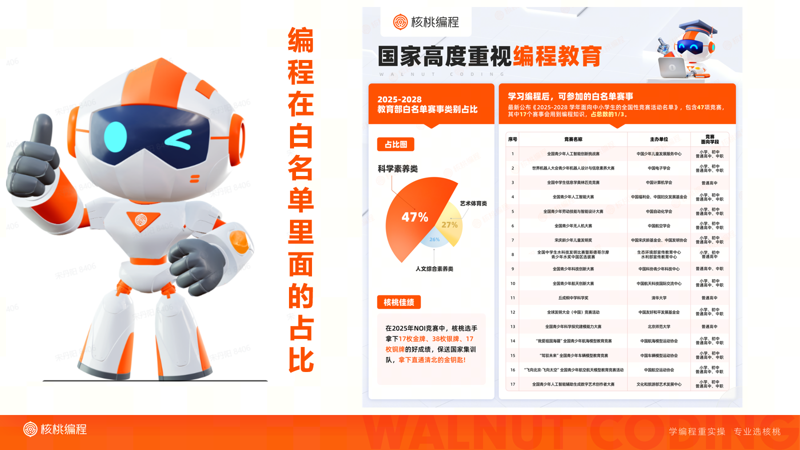
那白名单赛事和编程有什么关系？看这张图。它依据的是教育部最新公布的2025到2028学年面向中小学生的全国性竞赛活动名单，一共47项竞赛。这页的标题是编程在白名单里面的占比，对应的就是左边饼图里最大的一块，占47%，编程类赛事就在这一块科学素养类里。大家记住，编程类赛事在白名单里的占比就看这个47%；另外艺术体育类占27%，人文综合素养类占26%。右边列得更细，47项竞赛里有17项会用到编程知识，大约占总数的三分之一。也就是说，编程这条赛道能参加的白名单比赛非常多，孩子不管走思维路线还是竞赛路线，都能找到适合自己的舞台。
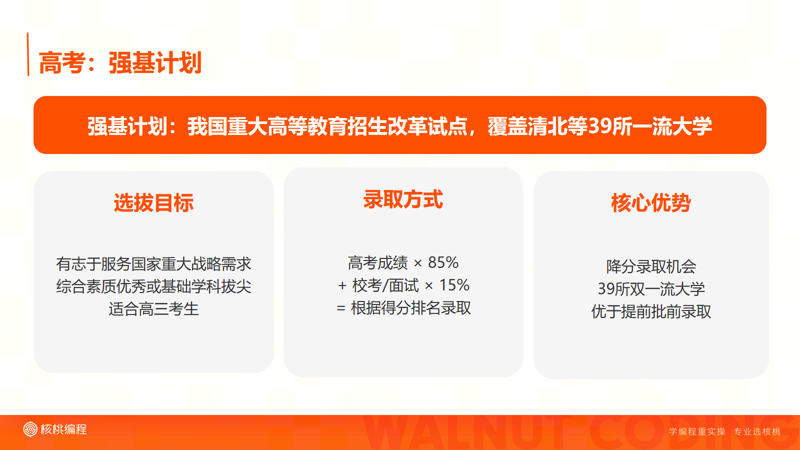
再往后是高考阶段的强基计划。这块对咱们现在带的学员来说还比较远，大家了解即可。强基计划是我国重大高等教育招生改革试点，覆盖清华北大等39所一流大学。选拔目标是有志于服务国家重大战略需求、综合素质优秀或基础学科拔尖的学生，适合高三考生。录取方式大家记一下：高考成绩占85%，校考或面试占15%，根据总得分排名录取。也就是说，参加强基计划并不是不用高考，高考成绩恰恰占了大头。它的核心优势有三个：有降分录取的机会，覆盖39所双一流大学，在提前批之前录取。
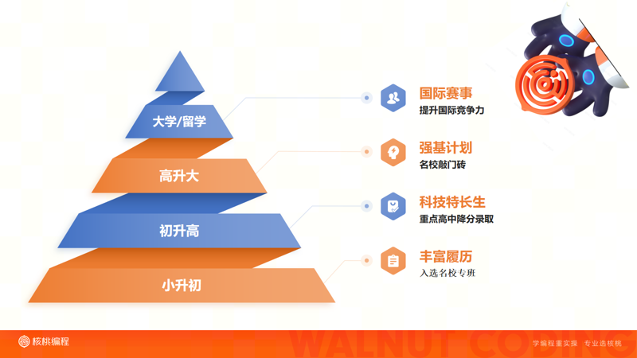
这张金字塔把整条升学路线串了起来。小升初，靠丰富履历，有机会入选名校专班；初升高，靠科技特长生，有机会被重点高中降分录取；高升大，靠强基计划，这是名校敲门砖；再往上到大学和留学阶段，国际赛事能提升国际竞争力。从小学到大学，每个阶段编程都有发挥作用的地方。这张图建议大家保存下来，以后给家长做规划时，先问清家长现在的需求和目标院校，再对照这张图，帮孩子做科学的规划。
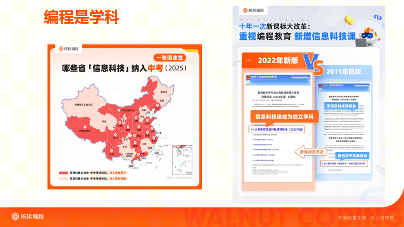
最后做个总结编程是唯一贯穿孩子每个阶段的有效赛道。对比舞蹈、音乐、体育这些课外班，它们也很好，但以兴趣培养为主，升学助力有限，没办法辅助学科，职业路径也比较窄。编程不一样，它贯穿小学到高中，能全程助力升学，能辅助语数学科，未来职业也是刚需。所以说，编程是所有课外班中，唯一一个从小学到高中、甚至到未来工作都持续有效的赛道。但给家长做规划时要注意，规划要落地，不要空谈。打个比方，想减肥，肯定是按周、按月做计划，不会说三年以后再开始。规划也一样，张嘴就跟家长讲强基计划、清华北大，对家长来说太远了。咱们的规划要落在思维培养加学习习惯上，再顺道拿证书，检验学习效果。
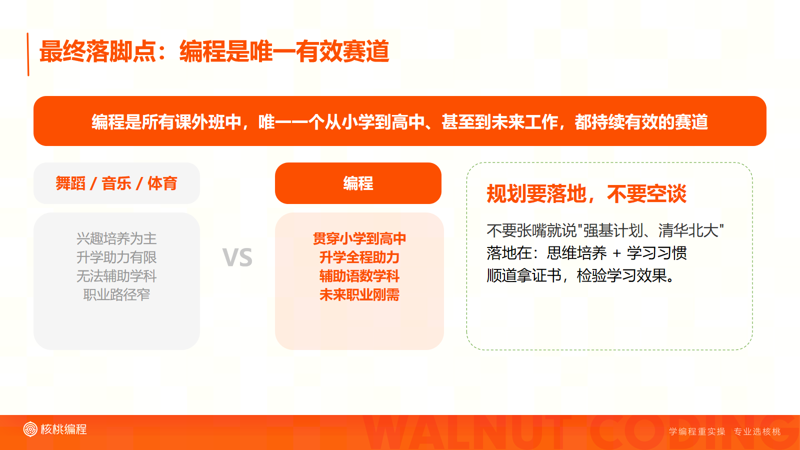
这一页想告诉大家，编程已经不只是兴趣班了。先看右边，2022年新版课标和2011年旧版对比，旧版里没有信息科技课程标准，只包含在实践活动里；新课标改革后，重视编程教育，新增信息科技课，并且成为了独立学科。再看左边，这是2025年哪些省份把信息科技纳入中考的速览图，颜色深的省份是作为中考考试科目、计入中考总分，颜色浅的是作为中考考核科目、计入学生档案。以后家长再说编程不就是个兴趣班吗，大家可以很有底气地讲清楚：编程是学科，是国家课程体系里的一部分。
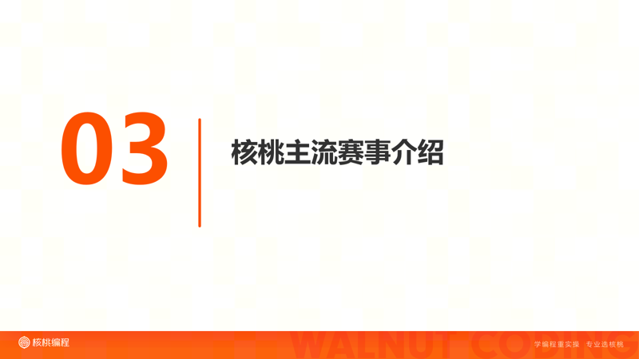
第二部分讲完了。知道了编程能助力升学，那具体能参加哪些考试和比赛呢？接下来进入第三部分，核桃主流赛事介绍。
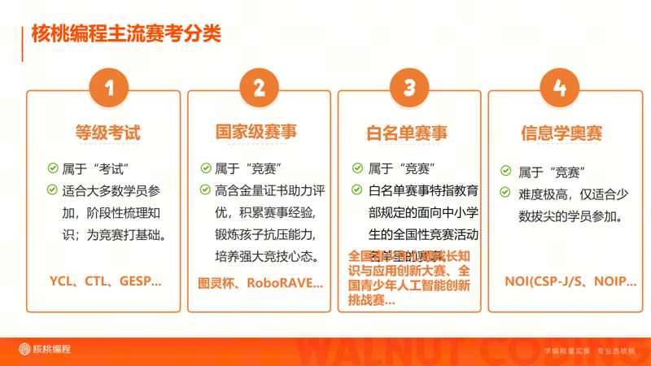
这页把核桃主流赛考分成了四类。第一类是等级考试，属于考试，适合大多数学员参加，作用是阶段性梳理知识，为竞赛打基础，代表有YCL、CTL、GESP，难度在四类里最低。第二类是国家级赛事，属于竞赛，有高含金量证书，能助力评优，帮孩子积累赛事经验，锻炼抗压能力，培养竞技心态，代表有图灵杯、RoboRAVE。第三类是白名单赛事，也属于竞赛，特指教育部规定的面向中小学生的全国性竞赛活动名单里的赛事，比如全国青少年心理成长知识与应用创新大赛、全国青少年人工智能创新挑战赛。第四类是信息学奥赛，也就是NOI这条线，包括CSP-J、CSP-S和NOIP，难度极高，仅适合少数拔尖的学员参加。来看一道题，“核桃编程主流赛考分类”中，哪一类属于“考试”而不是“竞赛”？
互动题
“核桃编程主流赛考分类”中，哪一类属于“考试”而不是“竞赛”？
- A. 国家级赛事
- B. 等级考试
- C. 白名单赛事
- D. 信息学奥赛
选错后：重讲本页重触发
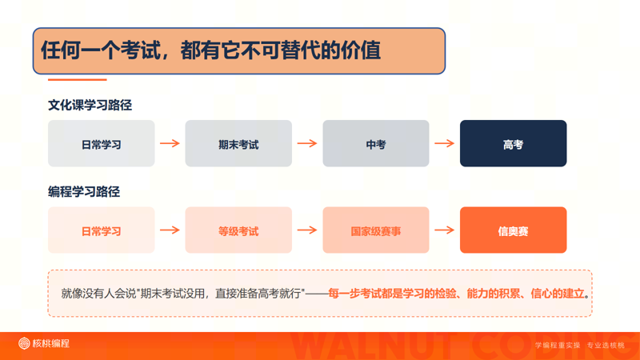
很多家长会问，等级考试和国家级赛事含金量够吗？是不是直接冲信奥赛就行？给大家打个比方。文化课的学习路径是日常学习、期末考试、中考、高考，没有人会说期末考试没用，直接准备高考就行。编程也是一样：日常学习、等级考试、国家级赛事、信奥赛。两条路径一一对应，等级考试相当于期末考试，国家级赛事相当于中考，信奥赛相当于高考。每一步考试都是学习的检验、能力的积累、信心的建立。等级考试和国家级赛事不是终点，而是通往更高目标的必经之路，各有不可替代的价值。
知道了核桃的赛事全貌，接下来聚焦咱们自己，看一看图形化的履约赛事，也就是老师们带班时会直接接触到的考试和比赛。
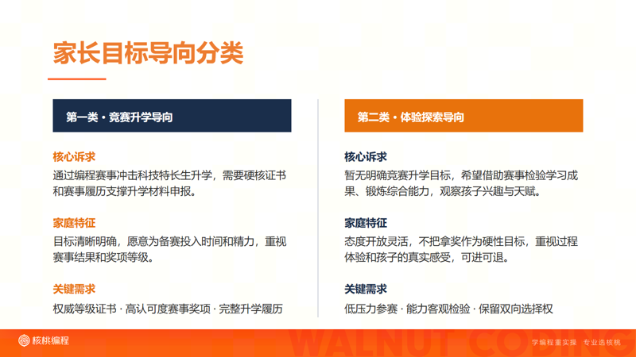
讲具体赛事之前，先看家长的分类，按目标导向分两类。第一类是竞赛升学导向。核心诉求是通过编程赛事冲击科技特长生升学，需要硬核证书和赛事履历来支撑升学材料申报。这类家庭目标清晰明确，愿意为备赛投入时间和精力，重视赛事结果和奖项等级。他们的关键需求是权威等级证书、高认可度赛事奖项和完整的升学履历。第二类是体验探索导向。暂时没有明确的竞赛升学目标，希望借助赛事检验学习成果、锻炼综合能力，观察孩子的兴趣与天赋。这类家庭态度开放灵活，不把拿奖作为硬性指标，重视过程体验和孩子的真实感受，可进可退。他们的关键需求是低压力参赛、能力客观检验，以及保留双向选择权。
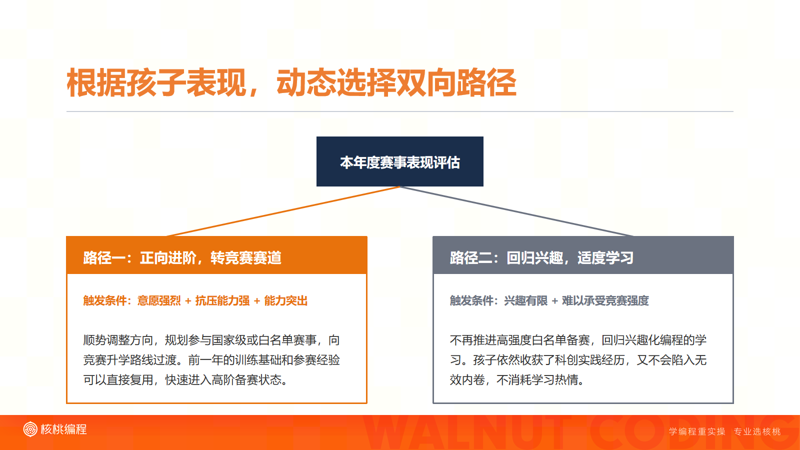
那双向选择怎么落地？先根据本年度孩子的赛事表现做评估，再动态选择两条路径。路径一，正向进阶，转竞赛赛道。触发条件是意愿强烈、抗压能力强、能力突出。这时就顺势调整方向，规划参与白名单等国家级赛事，向竞赛升学路线过渡，前一年的训练基础和参赛经验可以直接复用，快速进入高阶备赛状态。路径二，回归兴趣，适度学习。触发条件是兴趣有限，难以承受竞赛强度。这时就不再推进高强度赛事规划，回归兴趣化编程的学习。孩子依然收获了科创实践经历，又不会陷入无效内卷，不消耗学习热情。尤其是体验探索导向的家长，通过这一年的赛事表现，就能更清楚孩子适合走哪条路。
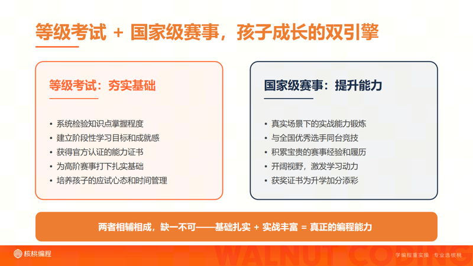
落到具体的赛考组合，等级考试加国家级赛事，是孩子成长的双引擎。等级考试负责夯实基础，作用有五点：系统检验知识点掌握程度，建立阶段性学习目标和成就感，获得官方认证的能力证书，为高阶赛事打下扎实基础，培养孩子的应试心态和时间管理。国家级赛事负责提升能力，也有五点：真实场景下的实战能力锻炼，与全国优秀选手同台竞技，积累宝贵的赛事经验和履历，开阔视野、激发学习动力，获奖证书为升学加分添彩。两者相辅相成，缺一不可，所以等级考试最好和国家级赛事搭配着一起参加。基础扎实，加上实战丰富，才是真正的编程能力。
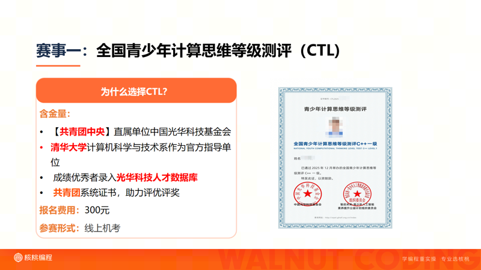
接下来逐个看具体赛事。第一个是等级考试CTL，全国青少年计算思维等级测评。为什么选CTL？看含金量。主办单位是共青团中央直属单位中国光华科技基金会，清华大学计算机科学与技术系作为官方指导单位；成绩优秀者可以录入光华科技人才数据库；它是共青团系统证书，可以助力评优评奖。报名费用是300元，参赛形式是线上机考。右边是证书样例，大家可以看一下。
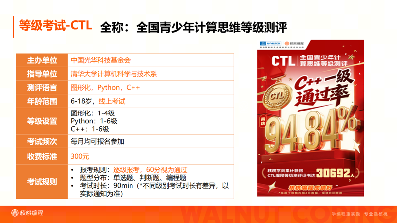
再通过表格把CTL的细节过一遍。主办单位是中国光华科技基金会，指导单位是清华大学计算机科学与技术系。测评语言有图形化、Python和C++三种。年龄范围是6到18岁，线上考试。等级设置上，图形化是一到四级，Python和C++都是一到六级。每个月都可以报名参加，收费300元。考试规则有三条：逐级报考，60分视为通过；题型有单选题、判断题和编程题；考试时长90分钟，不同级别时长有差异，以实际通知为准。右边这张海报是核桃学员的成绩，CTL的C++一级通过率高达94.84%，核桃学员累计获得CTL证书30692人。来看一道题，CTL考级多少分合格通过？
互动题
CTL考级多少分合格通过？
- A. 60
- B. 65
- C. 70
- D. 80
选错后：重讲本页重触发
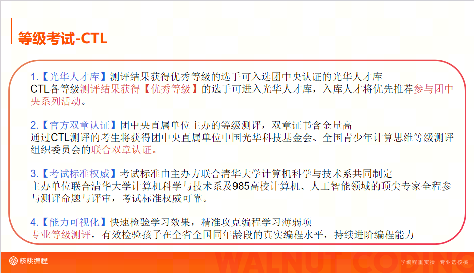
给家长讲CTL的价值，可以抓住这四点。第一，光华人才库。CTL各等级测评结果获得优秀等级的选手，可以进入团中央认证的光华人才库，入库人才将优先推荐参与团中央系列活动。第二，官方双章认证。通过CTL测评的考生，会获得团中央直属单位中国光华科技基金会、全国青少年计算思维等级测评组织委员会的联合双章认证。第三，考试标准权威。考试标准由主办方联合清华大学计算机科学与技术系共同制定，985高校计算机、人工智能领域的顶尖专家全程参与命题与评审。第四，能力可视化。专业等级测评能快速检验学习效果，精准攻克薄弱项，看清孩子在全省、全国同年龄段的真实编程水平。
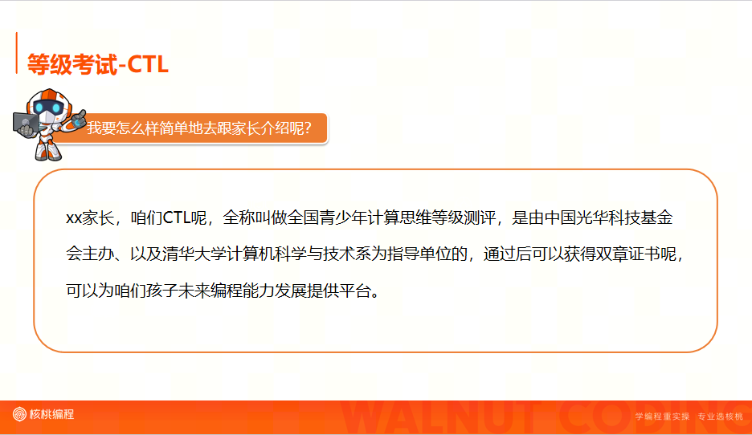
那怎么简单地跟家长介绍CTL呢？这页给了一段参考话术，大家可以直接用：某某家长，咱们CTL全称叫全国青少年计算思维等级测评，是由中国光华科技基金会主办、清华大学计算机科学与技术系作为指导单位的，通过后可以获得双章证书，可以为咱们孩子未来编程能力发展提供平台。
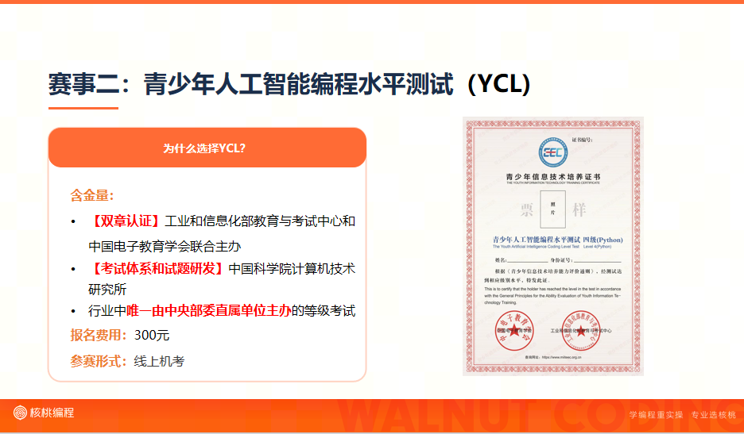
第二个等级考试是YCL，青少年人工智能编程水平测试。为什么选YCL？先看含金量。第一，双章认证，由工业和信息化部教育与考试中心和中国电子教育学会联合主办。第二，考试体系和试题研发，由中国科学院计算机技术研究所负责。第三，它是行业内唯一由中央部委直属单位主办的等级考试。报名费用是300元，参赛形式是线上机考。右边是证书样例，大家可以看一下。
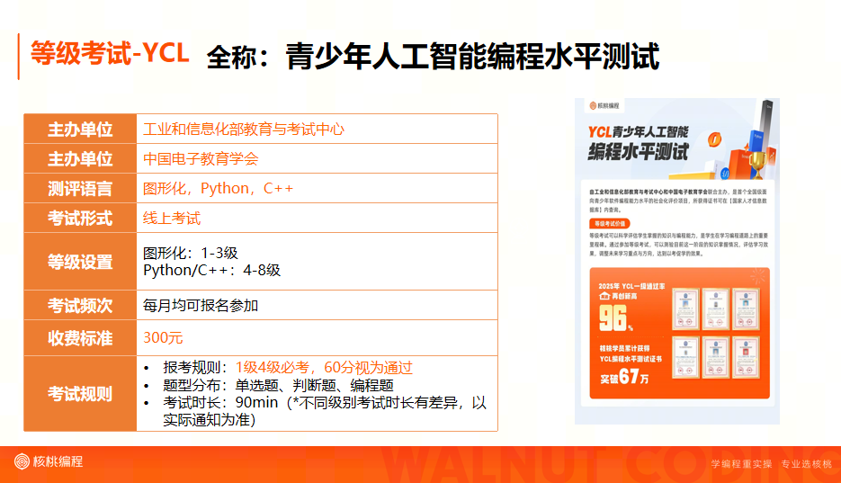
同样用表格把YCL过一遍。主办单位是工业和信息化部教育与考试中心和中国电子教育学会。测评语言是图形化、Python和C++，线上考试。等级设置上，图形化是一到三级，Python和C++是四到八级。每个月都可以报名参加，收费300元。考试规则：一级和四级必考，60分视为通过；题型有单选题、判断题和编程题；考试时长90分钟，不同级别会有差异，以实际通知为准。右边海报上，2025年YCL一级通过率是96%。大家注意，CTL和YCL的题型里都有编程题，不是只有选择和判断。
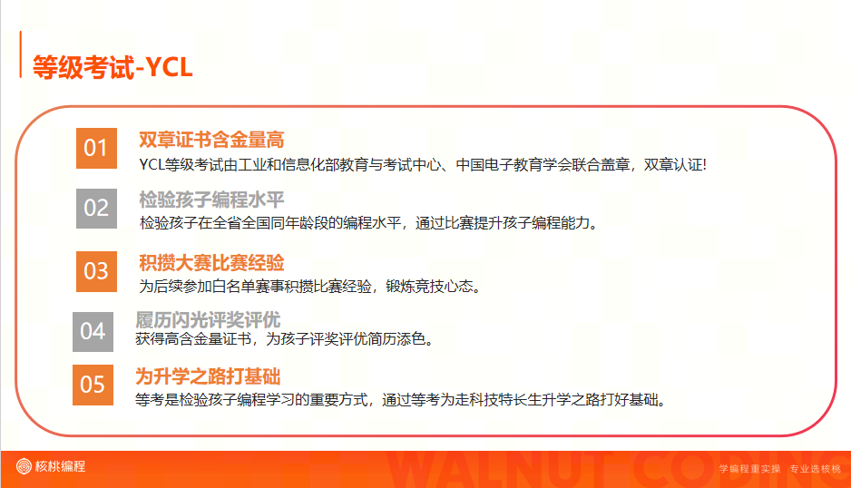
这五点是YCL的含金量，给家长讲规划时一定会用到，大家要熟悉。第一，双章证书含金量高，YCL由工业和信息化部教育与考试中心、中国电子教育学会联合盖章。第二，检验孩子编程水平，看清孩子在全省、全国同年龄段的编程水平。第三，积攒大赛比赛经验，为后续参加白名单赛事积累经验，锻炼竞技心态。第四，履历闪光、评奖评优，高含金量证书为孩子的评优简历添色。第五，为升学之路打基础，通过考级为走科技特长生升学之路打好基础。
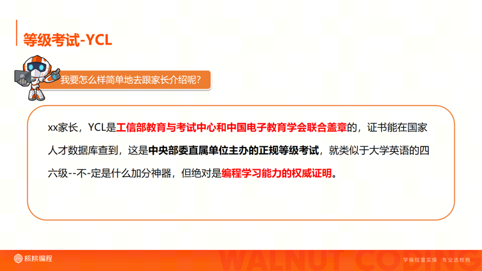
跟家长介绍YCL，参考话术是这样的：某某家长，YCL是工信部教育与考试中心和中国电子教育学会联合盖章的，证书能在国家人才数据库查到，这是中央部委直属单位主办的正规等级考试，就类似于大学英语的四六级，不一定是什么加分神器，但绝对是编程学习能力的权威证明。四六级这个类比很好用，既讲清了权威性，也没有夸大升学作用。
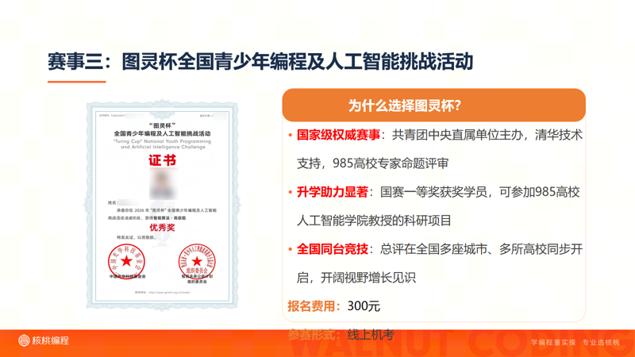
等级考试讲完，来看国家级赛事。第一个是图灵杯全国青少年编程及人工智能挑战活动。为什么选图灵杯？含金量有三点。第一，国家级权威赛事，由共青团中央直属单位主办，清华大学提供技术支持，985高校专家参与命题和评审。第二，升学助力显著，国赛一等奖获奖学员，可参加985高校人工智能学院教授的科研项目，为升学添彩。第三，全国同台竞技，总评在全国多座城市、多所高校同步开启，能开阔视野、增长见识。赛事面向全国6到18岁青少年，命题坚持真实情境、真实问题，重点检验孩子灵活运用编程解决实际问题的能力。报名费用是300元，参赛形式是线上机考。来看一道题，图灵杯国赛哪个奖项的获奖学员，可参加985高校人工智能学院教授的科研项目？
互动题
图灵杯国赛哪个奖项的获奖学员，可参加985高校人工智能学院教授的科研项目？
- A. 优秀奖
- B. 三等奖
- C. 二等奖
- D. 一等奖
选错后：重讲本页重触发
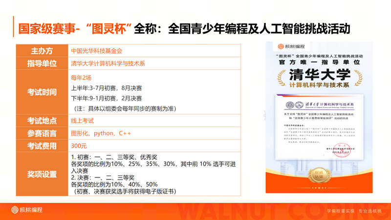
再通过表格把图灵杯的细节过一遍，其中奖项设置这一栏要重点记。主办方和CTL一样，是中国光华科技基金会，指导单位是清华大学计算机科学与技术系。考试时间是每年两场，上半年3到7月初赛、8月决赛，下半年9月到1月初赛、2月决赛，具体以组委会每年同步的赛制为准。考试地点是线上，图形化、Python、C++都可以参赛，费用300元。重点来看奖项设置。初赛设一等奖、二等奖、三等奖和优秀奖，比例分别是10%、25%、35%、30%。大家把这四个数加一加，正好是100%。这说明什么？参加初赛的孩子，都会落在这四个奖项里，最起码也能拿到优秀奖。初赛前10%的选手可以进入决赛，正好对应一等奖的比例。决赛设一、二、三等奖，比例是10%、40%、50%，加起来同样是100%，进了决赛的孩子也都会获奖。而且初赛、决赛的获奖选手都能拿到电子版证书。所以家长问，参加图灵杯的孩子都能拿到奖吗？按这张表的奖项设置，答案是能。但要分清两件事，人人有奖，不等于人人拿一等奖。拿哪个等级的奖、能不能进决赛，要看孩子的真实表现。跟家长沟通时，可以说参加了就有获奖证书，帮孩子建立信心，但不要承诺一定拿到某个等级的奖项。
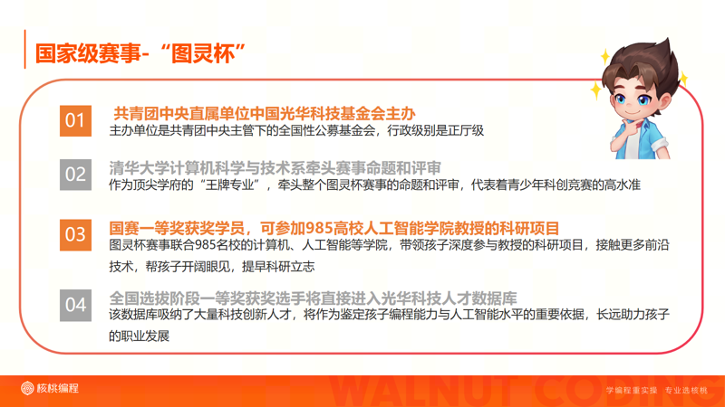
这四点是图灵杯的含金量，给家长讲规划时一定会用到。第一，共青团中央直属单位中国光华科技基金会主办，它是共青团中央主管下的全国性公募基金会，行政级别是正厅级。第二，清华大学计算机科学与技术系牵头赛事命题和评审，代表着青少年科创竞赛的高水准。第三，国赛一等奖获奖学员，可参加985高校人工智能学院教授的科研项目，接触更多前沿技术，帮孩子开阔眼界、提早科研立志。第四，全国选拔阶段一等奖获奖选手，将直接进入光华科技人才数据库，这是鉴定孩子编程能力与人工智能水平的重要依据，长远助力孩子的职业发展。
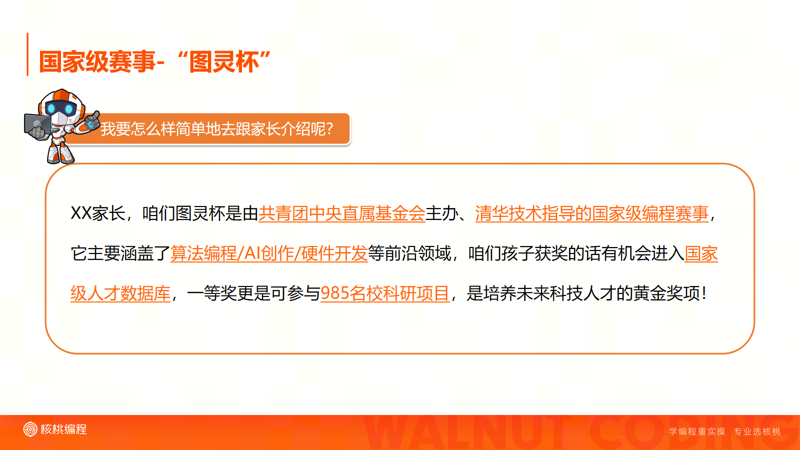
跟家长介绍图灵杯，参考话术是：某某家长，咱们图灵杯是由共青团中央直属基金会主办、清华技术指导的国家级编程赛事，主要涵盖了算法编程、AI创作、硬件开发等前沿领域，咱们孩子获奖的话有机会进入国家级人才数据库，一等奖更是可以参与985名校科研项目，是培养未来科技人才的黄金奖项。大家留意，话术里说的是有机会，不是一定。
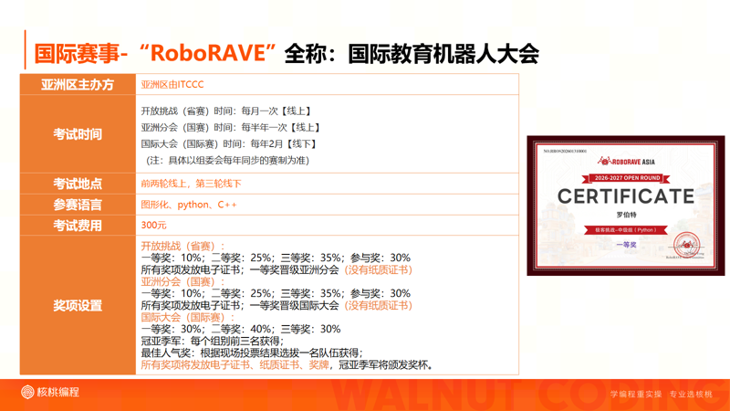
第二个国家级赛事是RoboRAVE国际教育机器人大会。赛程分三个阶段。第一阶段是开放挑战，相当于省赛，每个月都有一次线上参赛机会。第二阶段是亚洲分会，相当于国赛，每半年一次。第三阶段是国际大会，相当于国际赛，每年2月份左右举办。前两个阶段在线上进行，第三阶段国际大会是在线下进行的，所以不能说RoboRAVE都是线上比赛。参赛语言同样是图形化、Python、C++三种，费用300元。每个阶段的获奖比例，大家也要了解清楚。
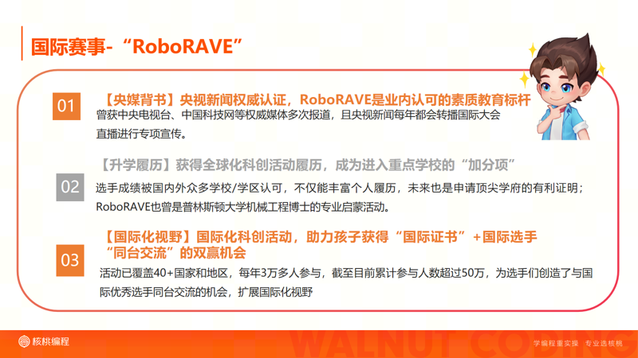
这三点是RoboRAVE的含金量。第一，央媒背书。RoboRAVE是业内认可的素质教育标杆，曾获中央电视台、中国科技网等权威媒体多次报道，央视新闻每年都会转播国际大会进行专项宣传。第二，升学履历。参赛能获得全球化科创活动履历，成为进入重点学校的加分项，选手成绩被国内外众多学校、学区认可，不仅丰富个人履历，未来也是申请顶尖学府的有利证明，RoboRAVE也曾是普林斯顿大学机械工程博士的专业启蒙。第三，国际化视野。活动已覆盖40多个国家和地区，每年3万多人参与，累计参与人数超过50万，孩子有机会获得国际证书，与国际优秀选手同台交流。
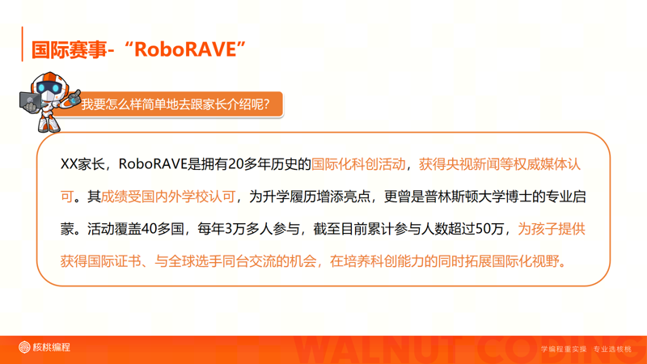
跟家长介绍RoboRAVE，参考话术是：某某家长，RoboRAVE是拥有20多年历史的国际化科创活动，获得央视新闻等权威媒体认可。它的成绩受国内外学校认可，能为升学履历增添亮点，更曾是普林斯顿大学博士的专业启蒙。活动覆盖40多国，每年3万多人参与，截至目前累计参与人数超过50万，为孩子提供获得国际证书、与全球选手同台交流的机会，在培养科创能力的同时拓展国际化视野。
图形化阶段的履约赛事就讲到这里。接下来看一看，在其他阶段，核桃还会组织学员参加哪些赛事。
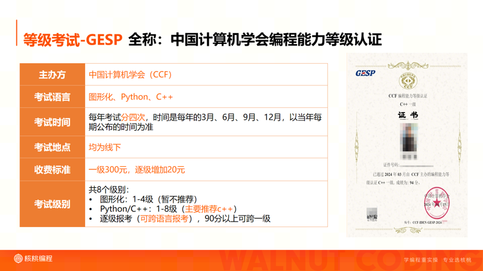
第一个是等级考试GESP，全称中国计算机学会编程能力等级认证，主办方是中国计算机学会，也就是CCF。考试语言同样是图形化、Python、C++。每年考四次，分别在3月、6月、9月、12月，具体以当年每期公布的时间为准。这里要注意，GESP都是线下考试。收费是一级300元，之后每升一级增加20元。一共8个级别，图形化是一到四级，但目前暂不推荐孩子在图形化阶段考GESP；Python和C++是一到八级，核桃主要推荐在C++阶段参加。报考规则是逐级报考，可以跨语言报考，成绩在90分以上可以跨一级。比如孩子这次一级考了95分，下次就可以跳过二级，直接报三级。
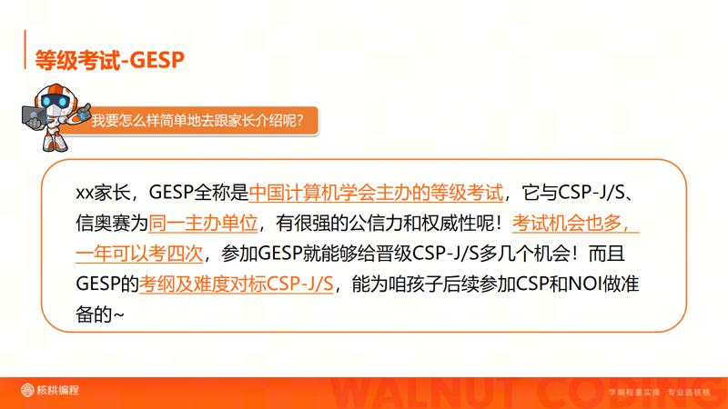
GESP的参考话术是：某某家长，GESP是中国计算机学会主办的等级考试，它和CSP-J、CSP-S、信奥赛是同一主办单位，有很强的公信力和权威性。考试机会也多，一年可以考四次，参加GESP，就能给晋级CSP-J、CSP-S多几次机会。而且GESP的考纲和难度对标CSP-J、CSP-S，能为孩子后续参加CSP和NOI做准备。
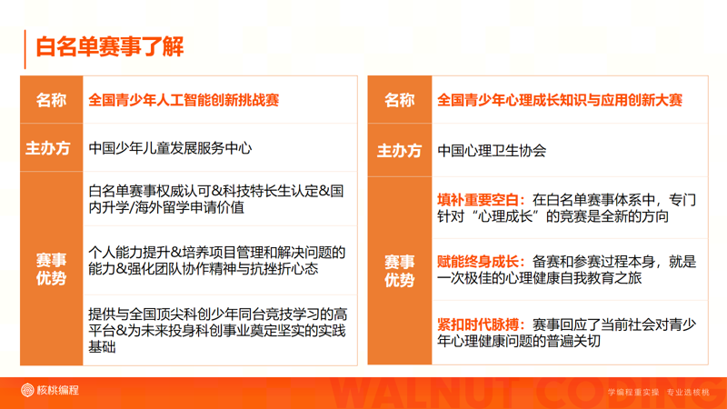
接下来是白名单赛事。这页列了两个。一个是全国青少年人工智能创新挑战赛，主办方是中国少年儿童发展服务中心，它是白名单赛事，权威认可，可用于科技特长生认定、国内升学和海外留学申请，还能提升个人能力，培养项目管理和解决问题的能力，强化团队协作和抗挫折心态。另一个是全国青少年心理成长知识与应用创新大赛，主办方是中国心理卫生协会，它填补了白名单赛事里心理成长方向的空白，备赛和参赛本身就是一次心理健康的自我教育。这里要特别提醒大家：带班过程中，我们一定会给家长规划考试和比赛，但具体规划哪一个，目前还不确定，需要等赛事招报前一个月左右，由专门的老师给大家同步。所以给家长做规划时，不要过度承诺一定能参加某个比赛、一定能拿到某个奖项，这些都是违规的。
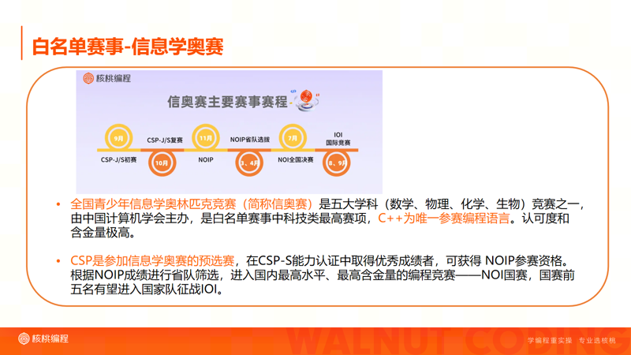
再来了解信息学奥赛。全国青少年信息学奥林匹克竞赛，简称信奥赛，是五大学科竞赛之一，其余是数学、物理、化学、生物。它由中国计算机学会主办，是白名单赛事中科技类的最高赛项，C++是唯一参赛编程语言，认可度和含金量极高。CSP是参加信奥赛的预选赛，在CSP-S能力认证中取得优秀成绩的选手，可以获得NOIP参赛资格；再根据NOIP成绩进行省队筛选，进入国内最高水平、最高含金量的编程竞赛，也就是NOI国赛；国赛前五名有望进入国家队，征战IOI国际赛。看上面的赛程图，9月是CSP-J和CSP-S初赛，10月复赛，11月NOIP，3、4月NOIP省队选拔，7月NOI全国决赛，8、9月IOI国际赛。信奥赛系列的CSP、NOIP、NOI都是在线下考场进行的。
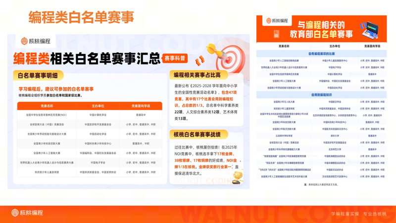
这两张图都是孩子学编程后可以参加的白名单赛事。左边是核桃整理的编程类相关白名单赛事汇总，右边是与编程相关的教育部白名单赛事列表，分成会有编程赛项的比赛和会用到编程知识的比赛。大家不用背，眼熟一下名字，家长问起来能对得上就行。左边还有一组数据和前面呼应：47项竞赛里，科学素养类22项、人文综合素养类12项、艺术体育类13项，其中17项会用到编程知识。
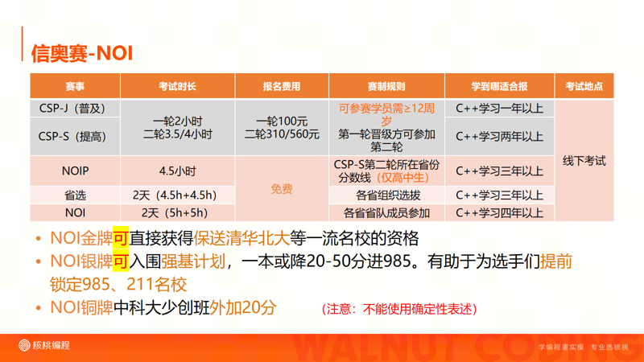
这一页是信奥赛系列赛事的具体规则，考试时长、报名费用、赛制规则、学到哪适合报，大家都要熟悉，测试里也会考到。CSP-J普及组和CSP-S提高组，第一轮2小时，第二轮3.5小时或4小时；报名费第一轮100元，第二轮310元或560元；参赛学员需年满12周岁，第一轮晋级才能参加第二轮；CSP-J建议C++学习一年以上，CSP-S建议两年以上。NOIP考试4.5小时，免费，要求CSP-S第二轮达到所在省份分数线，并且仅限高中生，建议C++学习三年以上。省选考两天，每天4.5小时，免费，由各省组织选拔，建议学习三年以上。NOI考两天，每天5小时，免费，由各省省队成员参加，建议学习四年以上。这些比赛全部是线下考试。下面三条是赛事成绩的作用：NOI金牌可直接获得保送清华北大等一流名校的资格；NOI银牌可入围强基计划，一本或降20到50分进985，有助于提前锁定985、211名校；NOI铜牌在中科大少创班可额外加20分。特别注意，跟家长描述时不能用确定性的表述。这里说的是可以，代表有机会，不是一定会被保送。
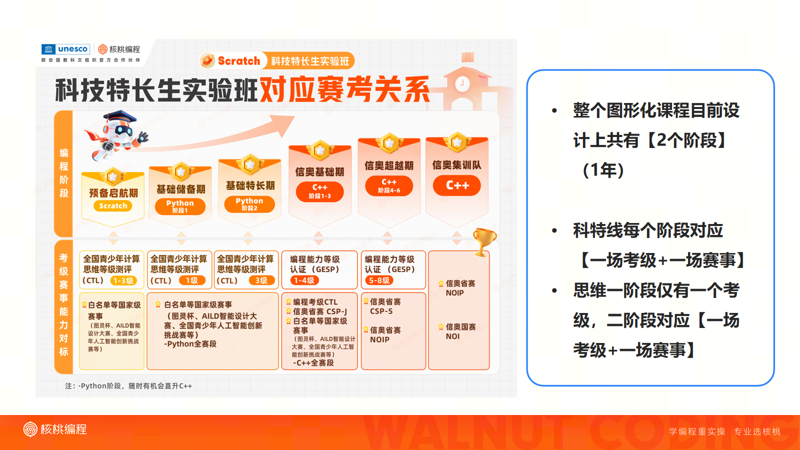
这张图是科技特长生实验班的对应赛考关系，也是大家以后带班会接触到的具体赛事规划。上面是编程阶段，从预备启航期的Scratch，到基础储备期、基础特长期的Python，再到信奥基础期、信奥超越期、信奥集训队的C++。下面是每个阶段对标的考级和赛事，比如预备启航期对应CTL一到三级和白名单等国家级赛事，到了C++阶段，会逐步对应GESP、CSP-J、CSP-S、NOIP，直到NOI。再看右边，这是重点：整个图形化课程目前设计上共有两个阶段，也就是一年。科特线每个阶段都对应一场考级加一场赛事；思维线一阶段仅有一次考级，二阶段对应一场考级加一场赛事。所以科特线和思维线对应的赛考安排是不一样的。
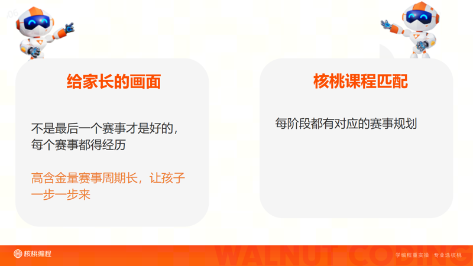
学到这里，咱们要给家长一个清晰的画面。第一，不是最后一个赛事才是最好的，每个赛事都得经历。高含金量的赛事周期长，需要让孩子一步一步来。第二，核桃的课程和赛事是匹配的，每个阶段都有对应的赛事规划。家长跟着课程节奏走，考级和比赛自然就衔接上了。
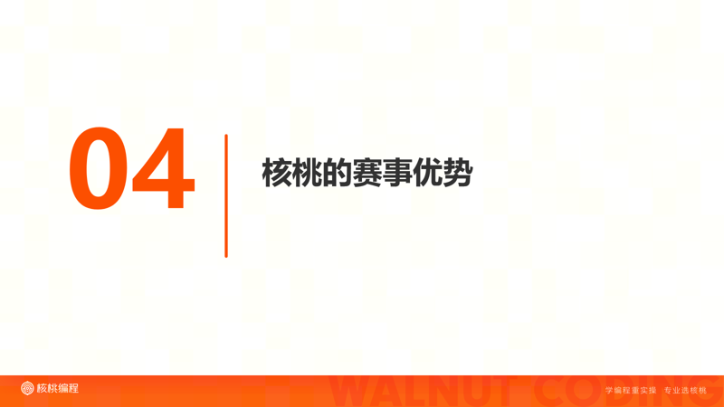
好，赛事体系和赛事价值都学完了。接下来进入第四部分，看看核桃在赛事方面到底有哪些优势。
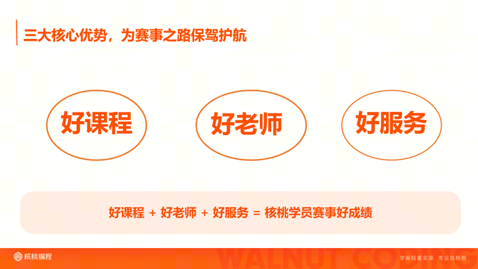
前面讲的过程中，大家已经看到了一些核桃学员的赛事成绩。这些成绩是怎么来的？靠的是三大核心优势，为孩子的赛事之路保驾护航，就是PPT上这个公式：好课程加好老师加好服务，等于核桃学员赛事好成绩。来看一道题，核桃为赛事之路保驾护航的三大核心优势不包括哪一项？
互动题
核桃为赛事之路保驾护航的三大核心优势不包括哪一项？
- A. 好课程
- B. 好平台
- C. 好老师
- D. 好服务
选错后：重讲本页重触发
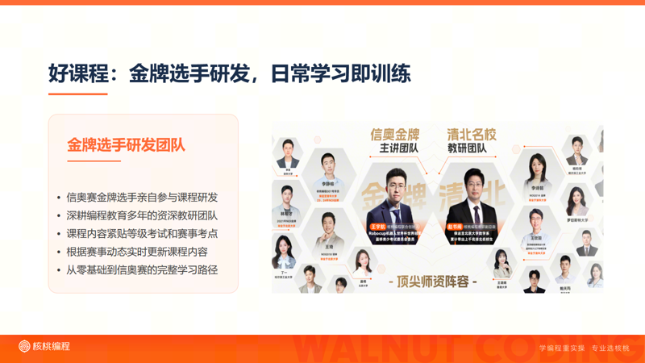
先说好课程，金牌选手研发，日常学习即训练。我们的研发团队有这几个特点：信奥赛金牌选手亲自参与课程研发，他们最懂赛事考什么、怎么考；还有深耕编程教育多年的资深教研团队。课程内容紧贴等级考试和赛事考点，会根据赛事动态实时更新，打造了从零基础到信奥赛的完整学习路径。右边就是我们的信奥金牌主讲团队和清北名校教研团队。
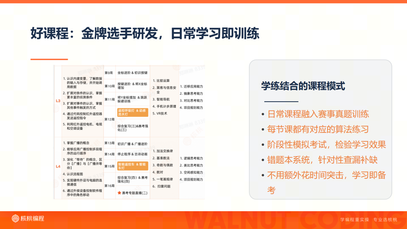
在课程模式上，我们采用学练结合。日常课程融入赛事真题训练，每节课都有对应的算法练习，还有阶段性模拟考试检验学习效果，错题本系统针对性查漏补缺。左边这张课表里也能看到，课程中专门安排了综合复习、赛考强化和赛考专题直播。孩子不用额外花时间突击，学习即备考，效率更高。
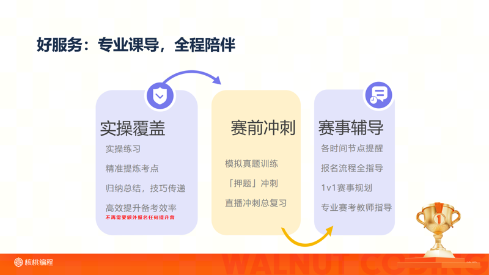
再说好服务，专业课导，全程陪伴。备考服务分三段。第一段是实操覆盖，包括实操练习、精准提炼考点、归纳总结和技巧传递，高效提升备考效率，不再需要额外报名任何提升营。第二段是赛前冲刺，有模拟真题训练、押题冲刺和直播冲刺总复习。第三段是赛事辅导，包括各时间节点提醒、报名流程全程指导、一对一赛事规划，以及专业赛考教师指导。另外，我们还有自己的在线评测平台核桃OJ，一年办了158场线上赛事，孩子平时就能参加实战训练，练的就是临场感。
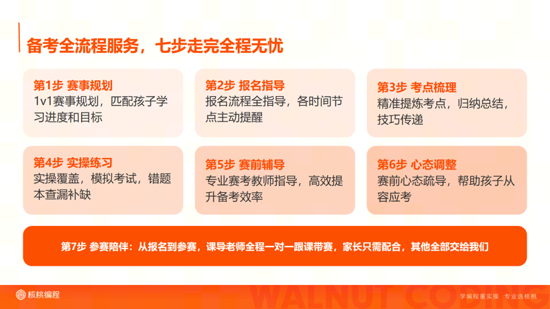
这七步把备考全流程串了起来。第一步赛事规划，一对一规划，匹配孩子的学习进度和目标。第二步报名指导，报名流程全程指导，各时间节点主动提醒。第三步考点梳理，精准提炼考点，归纳总结、技巧传递。第四步实操练习，实操覆盖、模拟考试、错题本查漏补缺。第五步赛前辅导，专业赛考教师指导，提升备考效率。第六步心态调整，赛前心态疏导，帮孩子从容应考。第七步参赛陪伴，从报名到参赛，课导老师全程一对一跟课带赛，家长只需配合。这里提醒一句，报名指导是带着家长把流程走清楚，缴费由家长自己操作，课导不代家长缴费。
最后说好老师，专业课导，全程陪伴。我们的课导老师懂编程，更懂孩子。严格筛选，每位课导老师都经过层层选拔和专业培训。专业背景，熟悉图形化编程和赛事体系，能做专业的赛考辅导。全程陪伴，从报名、备考到参赛，一对一跟进指导。及时反馈，每周学习反馈，问题及时解答，进度实时掌握。心理疏导，赛前心态调整，帮孩子从容应考。左边这张图也能看到，在知名编程教育机构的NOI考核通过教师数量中，核桃遥遥领先。这些也是咱们以后要对家长做到的。
第四部分讲完了。最后一部分，来看看核桃赛考的成绩，这些成绩也印证了咱们赛事体系的设置是科学合理的。
先看等级考试、国家级赛事和白名单赛事。第一张，2025年教育部白名单赛事，核桃编程助力104050名学员拿下科技特长生入场券，获奖人数位居青少年编程行业第一，是编程机构第二、第三名的总和。第二张是图灵杯省赛喜报，核桃获奖总人数4277名，其中一等奖469人，二等奖1099人，三等奖1519人，优秀奖1190人，469位选手成功晋级国赛。大家对照一下前面的奖项设置，四个奖项人数加起来正好是4277，一等奖约占一成，一等奖人数也正好等于晋级国赛的人数，和前10%进决赛的规则对得上。第三张，CTL的C++一级通过率高达94.84%。第四张，YCL一级通过率高达96%。所以说，核桃学员CTL和YCL的通过率都在90%以上。
再来看2026年信奥赛NOI的成绩。核桃学员拿下了29枚金牌、109枚银牌、66枚铜牌。全国金牌一共50枚，核桃占了29枚，金牌占比过半，央广网等多家央媒的报道。来看一道题，2026年NOI核桃学员拿到了多少枚金牌？
互动题
2026年NOI核桃学员拿到了多少枚金牌？
- A. 17
- B. 50
- C. 29
- D. 66
选错后：重讲本页重触发
最后给大家介绍一个好用的工具，销冠助手，10秒就能搜到想要的赛考物料。在飞书上搜索销冠助手，直接在对话框里输入相关的赛考问题就行，比如什么是科技特长生、白名单赛事成绩如何，或者查询某个地区的升学政策，它就能把对应的物料整理出来。家长问到当地政策时，大家可以先用它查一查。
好，这节课就到这里。请大家扫码填写一下核桃赛事体系调研问卷，写下你的真实感受。
题库（阶段小测 + 综合测试）
T-S01 · 阶段练习题·多选 · 赛考体系·阶段1 · 答案 ACD
（多选，选3项）P04中，赛考的三重业务价值包括哪些？
- A. 拉齐赛事认知
- B. 精准匹配赛事机会
- C. 检验学习效果
- D. 增强长期规划意愿
T-S02 · 阶段练习题·判断 · 赛考体系·阶段1 · 答案 B
P04中，“招报=小续报”是对赛考哪一重业务价值的说明？
- A. 拉齐赛事认知
- B. 增强长期规划意愿
- C. 检验学习效果
- D. 关键桥梁
T-S03 · 阶段练习题·多选 · 赛考体系·阶段1 · 答案 BD
（多选，选2项）P05中，“老师后期带班的核心竞争力”由哪两项组成？
- A. 懂政策
- B. 懂赛考
- C. 会续报
- D. 会规划
T-S04 · 阶段练习题·多选 · 赛考体系·阶段1 · 答案 B
P05中，课导是家长与升学政策、赛考资源之间的什么角色？
- A. 规划专家
- B. 关键桥梁
- C. 专业赛考教师
- D. 全程陪伴者
T-S05 · 阶段练习题·判断 · 赛考体系·阶段1 · 答案 A
课导是精准匹配孩子成长阶段与赛事机会的规划专家？
- A. 对
- B. 错
T-S06 · 阶段练习题·多选 · 赛考体系·阶段2 · 答案 D
P08结论“不是没有政策，而是政策不允许公开选拔”，所以小升初什么更重要？
- A. 学区房
- B. 竞赛成绩作为录取依据
- C. 摇号划片
- D. 证书和履历
T-S07 · 阶段练习题·单选 · 赛考体系·阶段2 · 答案 C
P09中，科技特长生政策主要在哪个阶段？
- A. 小升初
- B. 高升大
- C. 初升高
- D. 大学/留学
T-S08 · 阶段练习题·判断 · 赛考体系·阶段2 · 答案 B
每个地区所有学校的招生政策都是一样的，所以只需要按照一个模板给家长规划即可？
- A. 对
- B. 错
T-S09 · 阶段练习题·单选 · 赛考体系·阶段2 · 答案 C
编程赛事在白名单里面的占比是多少？
- A. 40%
- B. 50%
- C. 47%
- D. 48%
T-S10 · 阶段练习题·判断 · 赛考体系·阶段2 · 答案 B
参加强基计划就不用参加高考也可以被录取？
- A. 对
- B. 错
T-S11 · 阶段练习题·判断 · 赛考体系·阶段3 · 答案 D
P19对照两条学习路径，编程学习路径中与文化课“高考”对应的是？
- A. 国家级赛事
- B. 等级考试
- C. 白名单赛事
- D. 信奥赛
T-S12 · 阶段练习题·单选 · 赛考体系·阶段3 · 答案 B
P19中，编程学习路径的“国家级赛事”对应文化课学习路径的哪一环？
- A. 期末考试
- B. 中考
- C. 日常学习
- D. 高考
T-S13 · 阶段练习题·多选 · 赛考体系·阶段3 · 答案 BCD
（多选，选3项）P23中，下列哪些属于“国家级赛事：提升能力”的作用？
- A. 系统检验知识点掌握程度
- B. 真实场景下的实战能力锻炼
- C. 与全国优秀选手同台竞技
- D. 获奖证书为升学加分添彩
T-S14 · 阶段练习题·多选 · 赛考体系·阶段3 · 答案 C
P23中，下列哪项属于“等级考试：夯实基础”的作用？
- A. 积累宝贵的赛事经验和履历
- B. 开阔视野，激发学习动力
- C. 获得官方认证的能力证书
- D. 与全国优秀选手同台竞技
T-S15 · 阶段练习题·判断 · 赛考体系·阶段3 · 答案 D
P23中，等级考试与国家级赛事的关系是？
- A. 参加国家级赛事后可不再考级
- B. 二者选其一即可
- C. 先拿齐全部等级证书再考虑赛事
- D. 两者相辅相成，缺一不可
T-S16 · 阶段练习题·单选 · 赛考体系·阶段4 · 答案 D
CTL的报名费多少钱？
- A. 100
- B. 400
- C. 500
- D. 300
T-S17 · 阶段练习题·单选 · 赛考体系·阶段4 · 答案 C
YCL的图形化最高到几级？
- A. 1级
- B. 2级
- C. 3级
- D. 4级
T-S18 · 阶段练习题·判断 · 赛考体系·阶段4 · 答案 B
P25中，CTL考试的题型分布是？
- A. 单选题、多选题、判断题
- B. 单选题、判断题、编程题
- C. 判断题、编程题
- D. 单选题、填空题、编程题
T-S19 · 阶段练习题·判断 · 赛考体系·阶段4 · 答案 C
P33中，图灵杯初赛前百分之多少的选手可进入决赛？
- A. 25%
- B. 30%
- C. 10%
- D. 35%
T-S20 · 阶段练习题·判断 · 赛考体系·阶段4 · 答案 D
P36中，RoboRAVE的考试地点安排是？
- A. 三轮均为线上
- B. 第一轮线上，后两轮线下
- C. 三轮均为线下
- D. 前两轮线上，第三轮线下
T-S21 · 阶段练习题·判断 · 赛考体系·阶段5 · 答案 A
P45中，信奥赛各赛事（CSP-J/S、NOIP、省选、NOI）的考试地点是？
- A. 线下考试
- B. 线上考试
- C. 前两轮线上，第三轮线下
- D. 初赛线上，复赛线下
T-S22 · 阶段练习题·判断 · 赛考体系·阶段5 · 答案 D
P43中，信奥赛的参赛编程语言是？
- A. 图形化、Python、C++
- B. Python、C++
- C. Python
- D. C++
T-S23 · 阶段练习题·判断 · 赛考体系·阶段5 · 答案 B
P46中，思维线一阶段对应的赛考安排是？
- A. 一场考级+一场赛事
- B. 仅有一个考级
- C. 仅有一场赛事
- D. 两场考级
T-S24 · 阶段练习题·判断 · 赛考体系·阶段5 · 答案 C
P45中，NOI哪一奖项“可直接获得保送清北大等一流名校的资格”？
- A. 银牌
- B. 铜牌
- C. 金牌
- D. 省选一等奖
T-S25 · 阶段练习题·判断 · 赛考体系·阶段5 · 答案 B
白名单里面全都是编程类的比赛？
- A. 对
- B. 错
T-S26 · 阶段练习题·判断 · 赛考体系·阶段6 · 答案 C
P51“学练结合的课程模式”中，下列哪项是PPT所列内容？
- A. 需要额外花时间突击备考
- B. 赛前需额外报名提升营
- C. 每节课都有对应的算法练习
- D. 课程不涉及赛事真题
T-S27 · 阶段练习题·多选 · 赛考体系·阶段6 · 答案 ACD
（多选，选3项）P52中，“好服务”包含哪三个环节？
- A. 实操覆盖
- B. 心理疏导
- C. 赛前冲刺
- D. 赛事辅导
T-S28 · 阶段练习题·判断 · 赛考体系·阶段6 · 答案 B
P53“备考全流程服务”中，第2步“报名指导”的内容是？
- A. 1v1赛事规划，匹配孩子学习进度和目标
- B. 报名流程全指导，各时间节点主动提醒
- C. 精准提炼考点，归纳总结，技巧传递
- D. 赛前心态疏导，帮助孩子从容应考
T-S29 · 阶段练习题·判断 · 赛考体系·阶段6 · 答案 A
核桃学员CTL和YCL的通过率都在90%以上？
- A. 对
- B. 错
T-S30 · 阶段练习题·判断 · 赛考体系·阶段6 · 答案 A
2025年核桃白名单赛事是TOP1？
- A. 对
- B. 错
T-F01 · 本章综合测试题·单选 · 赛考体系·全章 · 答案 BD
（多选，选2项）下列关于CTL和YCL的说法，哪些与PPT一致？
- A. 两者图形化都设1-4级
- B. 两者收费标准都是300元
- C. 两者都由中国光华科技基金会主办
- D. 两者都是60分视为通过
T-F02 · 本章综合测试题·单选 · 赛考体系·全章 · 答案 C
家长问：“孩子想冲信奥赛，学图形化或Python能参赛吗？”按PPT，课导应如何回应？
- A. 图形化、Python、C++均可参赛
- B. Python和C++均可参赛
- C. 信奥赛以C++为唯一参赛编程语言，需要后续学习C++
- D. 学图形化可直接报名CSP-J
T-F03 · 本章综合测试题·单选 · 赛考体系·全章 · 答案 A
家长说：“我们学校没有政策，是学区房，小升初不需要竞赛证书。”课导依据PPT应如何回应？
- A. 不是没有政策，而是政策不允许公开选拔，所以证书和履历更重要
- B. 确实没有政策，按学区房入学即可
- C. 小升初可以凭竞赛成绩直接录取
- D. 小升初是科技特长生政策的主要阶段
T-F04 · 本章综合测试题·单选 · 赛考体系·全章 · 答案 ACD
（多选，选3项）P14中各升学阶段与编程助力方式的对应，哪些正确？
- A. 小升初—丰富履历
- B. 大学/留学—白名单赛事
- C. 初升高—科技特长生
- D. 高升大—强基计划
T-F05 · 本章综合测试题·单选 · 赛考体系·全章 · 答案 B
关于NOI奖项权益，下列与PPT一致的是？
- A. NOI铜牌可直接获得保送清北大资格
- B. NOI银牌可入围强基计划，一本或降20-50分进985
- C. NOI金牌中科大少创班外加20分
- D. NOI银牌可直接获得保送清北大资格
T-F06 · 本章综合测试题·单选 · 赛考体系·全章 · 答案 D
某家庭目标清晰，愿意为备赛投入时间和精力，重视赛事结果和奖项等级。按PPT，该家庭属于哪一类？
- A. 体验探索导向
- B. 回归兴趣路径
- C. 低压力参赛型
- D. 竞赛升学导向
T-F07 · 本章综合测试题·单选 · 赛考体系·全章 · 答案 A
孩子本年度赛事表现评估显示：兴趣有限、难以承受竞赛强度。按PPT应建议走哪条路径？
- A. 回归兴趣，适度学习
- B. 正向进阶，转竞赛赛道
- C. 规划参加国家级或白名单赛事，向竞赛升学路线过渡
- D. 直接进入高阶备赛状态
T-F08 · 本章综合测试题·多选 · 赛考体系·全章 · 答案 BD
（多选，选2项）在“核桃编程主流赛考分类”中，属于“等级考试”的有？
- A. 图灵杯
- B. CTL
- C. RoboRAVE
- D. GESP
T-F09 · 本章综合测试题·单选 · 赛考体系·全章 · 答案 C
下列赛考与主办单位的对应，正确的是？
- A. YCL—中国光华科技基金会
- B. 图灵杯—中国电子教育学会
- C. GESP—中国计算机学会（CCF）
- D. CTL—工业和信息化部教育与考试中心
T-F10 · 本章综合测试题·单选 · 赛考体系·全章 · 答案 B
孩子 NOI 拿了银牌，家长问「是不是稳进清北了？」按本课表述规范你应该怎么说？
- A. 承诺肯定能保送清北
- B. 说明NOI金牌才有保送资格、银牌可入围强基计划；表述留有余地，不做确定性承诺
- C. 让家长别问这么多
- D. 承诺能降200分录取